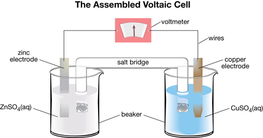

Module 4—Batteries and Balance
 Module 4: Lesson 1 Lab—The Voltaic Cell
Module 4: Lesson 1 Lab—The Voltaic Cell
Alessandro Volta (1745–1827) is credited with the discovery of the construction and design of the first electric cells. The name voltaic is often used to describe the type of cell you will study in this module. One type of voltaic cell design uses copper and zinc electrodes. This type of cell is often studied due to its reliability. In this investigation you will construct and test a voltaic cell.
Pre-Lab
Earlier in this lesson you learned that the principles of electrochemical reactions you investigated in Module 3 could be applied to understand the operation of the cells you will investigate in Module 4. Before you view the virtual investigation for this lab, complete Self-Check questions 1–7.
 Self-Check
Self-Check
Consider this diagram:

SC 1. List the two metals used in the cell. Use the “Table of Selected Standard Electrode Potentials” in your Chemistry Data Booklet to determine which one of the two metals is the more reactive metal. Repeat this step for the metal ions in the cell.
SC 2. Use the “Table of Selected Standard Electrode Potentials” in your Chemistry Data Booklet to determine the oxidation and reduction half-reactions that would occur in the voltaic cell illustrated.
SC 3. Use your knowledge of spontaneous reactions to determine whether the more reactive metal and metal ion will react spontaneously in the cell shown in the diagram.
SC 4. Use your half-reactions to determine which metal is losing electrons and which metal ion is gaining electrons.
SC 5. Use your spontaneous half-reactions to predict what will happen to each metal strip if you were to let the voltaic cell sit for a long time.
SC 6. If the voltaic cell kept operating indefinitely, would any part of the cell labelled in the diagram need to be replaced? Explain your reasoning.
SC 7. Hypothesize which metal strip is the negative electrode of the voltaic cell and which metal strip is the positive electrode of the voltaic cell. Provide a reason for your choice.
Self-Check Answers
Contact your teacher if your answers vary significantly from the answers provided here.
SC 1. Copper and zinc are used in the cell. Zinc is the more reactive metal. The copper ion is the more reactive metal ion.
SC 2. The redox half-reactions will involve the reduction of the most reactive metal ion and the oxidation of the most reactive metal.
reduction: Cu2+(aq) + 2e– → Cu(s)
oxidation: Zn(s) → Zn2+(aq) + 2e–
SC 3. The reaction will be spontaneous because the reduction half-reaction appears above the oxidation half-reaction in the "Table of Selected Standard Electrode Potentials." From experiments performed in Module 3, it is known that reactants with similar positions on the table react spontaneously.
SC 4. As stated in the half-reactions, the zinc will lose electrons and the copper ions will gain electrons.
SC 5. The zinc electrode should reduce in mass and possibly in size as the zinc atoms lose electrons and are changed into zinc ions that will go into solution. The copper electrode should increase in mass as the copper ions come out of the solution to join with electrons to form copper metal.
SC 6. A voltaic cell is a closed chemical system, and the reactants will be depleted as the reactions proceed. Unless more copper(II) ions are placed into the cell and more zinc is added, no reactants will be present to change electrons.
SC 7. Since the zinc metal is the site of oxidation and, therefore, the source of electrons, it is the negative electrode. The copper electrode is the destination for the electrons in contact with the copper ions that will gain the electrons. This makes the copper metal the positive electrode.
Procedure
 View the virtual investigation “Building a Voltaic Cell.” Remember to record your data and observations as you view the presentation.
View the virtual investigation “Building a Voltaic Cell.” Remember to record your data and observations as you view the presentation.
Analysis
Use your observations from the virtual investigation to complete Self-Check questions 8–11.
Self-Check
SC 8. Describe the effect on the output of the voltmeter when you lifted the salt bridge out of the cell.
SC 9. Hypothesize why the salt bridge is necessary for the voltaic cell to work.
SC 10. Explain what happened to the output of the voltmeter when you connected the leads from the voltmeter to the opposite electrodes in the cell.
SC 11. Describe the changes you observed to the electrodes or to the solutions. Use the half-reactions developed in SC 2 to help suggest reasons for the changes you observed.
Self-Check Answers
Contact your teacher if your answers vary significantly from the answers provided here.
SC 8. When the salt bridge was lifted out of the solution, the voltage dropped to zero.
SC 9. Hypothesis: Systems need to maintain a balance in their function. In this cell, electrons transfer between the parts of the cell. When electrons transfer, there is a flow of negative charge. To maintain a balance, there must also be a flow of positive charge to balance the flow of negative charge.
The salt bridge allows ions in the electrolytes to move, thus completing the flow of charge in the circuit. If electrons are flowing along the wire from one electrode to the other, there must be a movement of ions within the cell to complete the circuit. This is completed by the movement of dissociated ions in the solutions through the salt bridge.
SC 10. When the leads from the voltmeter were connected to the opposite electrodes in the voltaic cell, the voltmeter switched from displaying a positive output to displaying a negative output. If the original output was negative, it would have switched to positive. In both cases, the output changes because the electrons are flowing through the voltmeter in the opposite direction.
SC 11. The copper electrode had a reddish-brown sediment on its surface. This is the copper metal being deposited from the copper ions that come out of the solution as described by the reduction half-reaction. Since the copper ions are being removed from the solution containing the copper electrode, this solution appeared to have a slightly less intense colour after the cell had been operating. Although no visible changes could be observed on the zinc electrode, this electrode would diminish in mass and size if the voltaic cell were able to run for a long time.